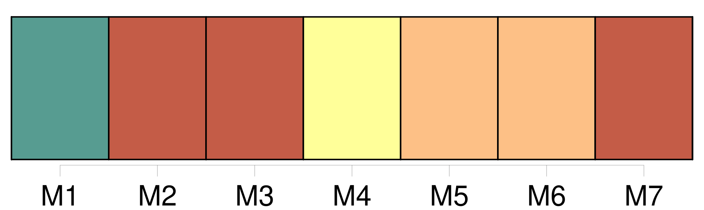
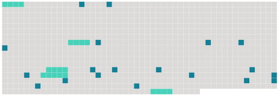

Longueur nb maillons : 24 mentions |
 |
[Grand-père et l’ homme] causaient, sans s’ occuper de lui. Blotti entre [leurs] genoux, écrasé par [leurs] cuisses, à peine assis, et souvent pas assis du tout, il était parfaitement heureux ; il causait tout haut, sans s’ inquiéter des réponses. [20 phrases] Il écrasait de son mépris [les deux lourds imbéciles] , [qui] ne comprenaient pas ce que son chant avait de sublime, un chant qui ouvrait le ciel!!
Il [les] trouva très laids, avec [leur] barbe de huit jours ; et [ils] sentaient mauvais. [10 phrases]
» [Leur] ton s’ élevait souvent, surtout quand [ils] parlaient d’ affaires locales et d’ intérêts blessés. L’ enfant cessait de rêver, et [les] regardait, inquiet. Il lui semblait qu’ [ils] étaient fâchés [l’ un contre l’ autre] , et il craignait qu’ [ils] n’ en vinssent aux coups. C’ était, bien au contraire, au moment où [ils] s’ entendaient le mieux dans une commune haine. Même le plus souvent, [ils] n’ avaient point de haine, ni la moindre passion : [ils] parlaient de choses indifférentes, en criant à plein gosier, pour le plaisir de crier, comme c’ est la joie du peuple. Mais Christophe, qui ne comprenait pas [leur] conversation, entendait seulement [leurs] éclats de voix, il voyait [leurs] traits crispés, et il pensait avec angoisse : « Comme il a l’ air méchant!! [Ils] se haïssent, sûrement. [7 phrases] » [Les deux ennemis mortels] se serraient la main. |
 |
Il est possible de télécharger la ressource sur la page Ortolang |
Si vous avez des questions ou vous voyez des erreurs, merci d'envoyer un mail à silvia.federzoni89@gmail.com |